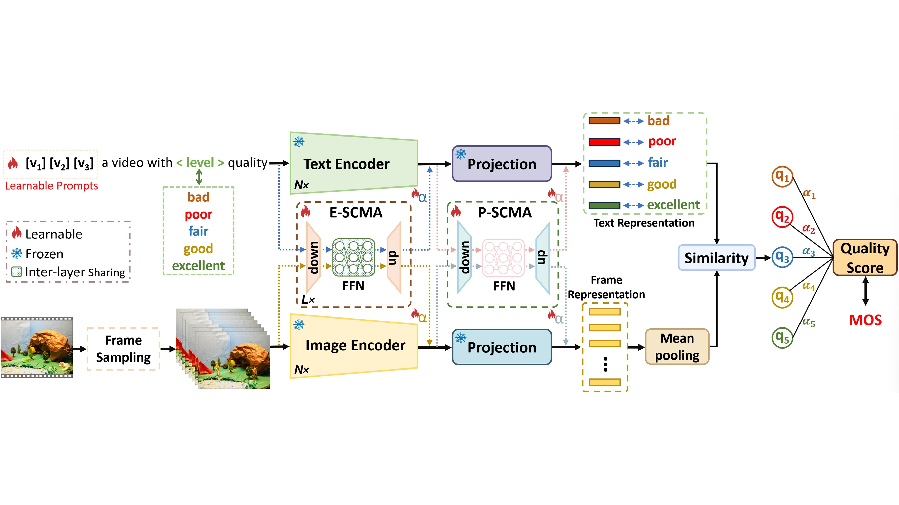
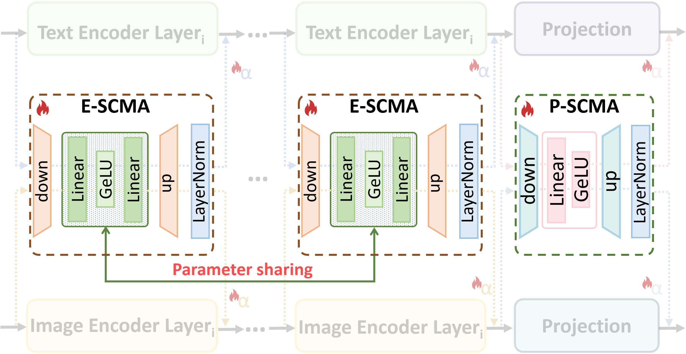
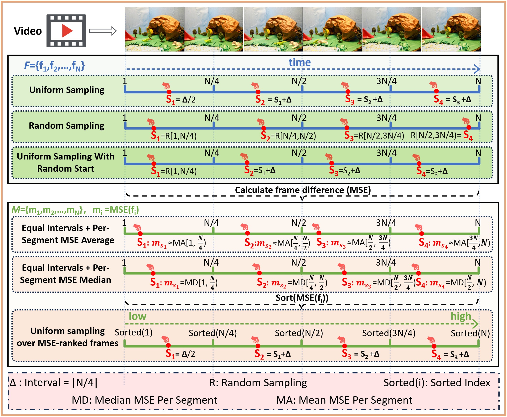
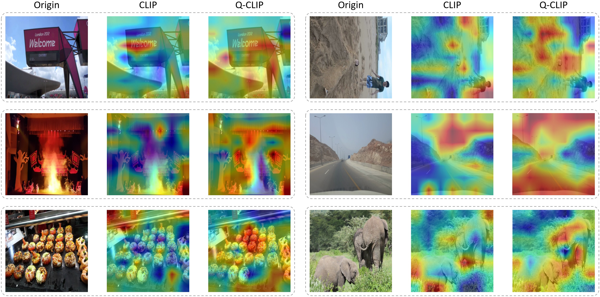

Abstract
Overview
Q-CLIP is a vision-language framework for video quality assessment that preserves the broad semantic knowledge of pretrained encoders while adapting them efficiently to visual quality. It introduces shared cross-modal adapters for both image and text branches, learnable quality-level prompts, and frame-difference-guided sampling. The resulting model trains only a small fraction of its parameters and achieves strong performance across in-domain and cross-dataset VQA benchmarks.
01 · Figure
Q-CLIP turns video quality assessment into cross-modal quality matching, adapting frozen vision-language encoders with a compact Shared Cross-Modal Adapter and learnable quality prompts.

02 · Figure
Shared Cross-Modal Adaptation

03 · Figure
Quality-Aware Frame Sampling

04 · Figure
What the Model Sees

Citation
BibTeX
@inproceedings{mi2026qclip,
title={{Q-CLIP}: Unleashing the Power of Vision-Language Models for Video Quality Assessment through Unified Cross-Modal Adaptation},
author={Mi, Yachun and Li, Yu and Li, Yanting and Hui, Chen and Zhang, Tong and Li, Zhixuan and Song, Chenyue and Lim, Wei Yang Bryan and Liu, Shaohui},
booktitle={International Conference on Machine Learning},
year={2026}
}